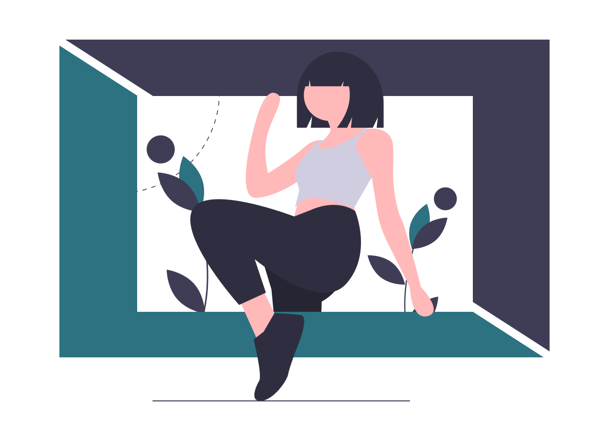
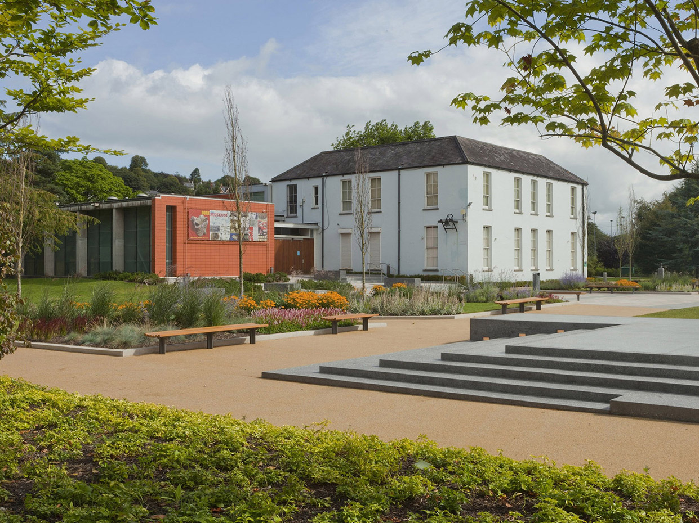
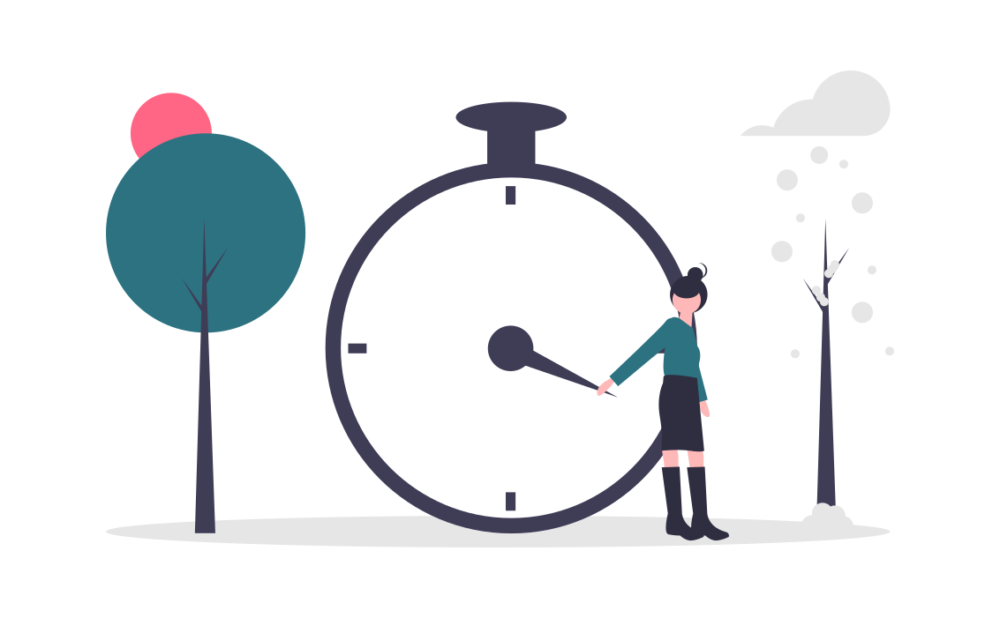

A Post-Visit Tangible Escape Room with AR for Mobile

Escape The Museum is a post-visit mobile escape room app developed for
the Cork Public Museum, combining Augmented Reality (AR) with tangible
elements, for primary school children.
Escape The Museum: Main Interface
The Problem
The Cork Public Museum, like many museums, faces challenges in
sustaining visitor engagement both during and after their visit,
particularly among younger audiences. The post-visit phase
presents significant potential for enhancing engagement, yet
current tools are generally static and lack the interactivity
needed to foster an ongoing connection with visitors.
This gap offers a valuable opportunity to strengthen engagement
by focusing on the post-visit stage and introducing an
interactive tool that keeps visitors connected after they leave.
Addressing this need could not only encourage return visits but
also establish a model for similar institutions.

The Goal
The goal was to create an engaging, interactive post-visit app
that bridges the on-site and post-visit experience. Designed as
a fun, game-like tool, the app aims to enhance on-site
engagement, sustain interest after the visit, and encourage
visitors to return.
The Process
To develop this concept, I conducted user research, including
curator interviews, on-site observations, and a comprehensive
literature review of prior work. The insights were synthesised
and prioritised using affinity mapping and MoSCoW prioritisation
to define key design requirements.
Early design concepts were shaped with user flow diagrams and
low-fidelity wireframes, leading to an interactive prototype
built with Unity and Vuforia. This prototype underwent
evaluative testing, revealing several areas for further
development.
UX Design Process
Research
Research Gap
The literature review highlighted a clear gap: the need for a
dynamic, interactive post-visit tool for museums. The post-visit
stage holds great potential to engage visitors and existing tools
mainly focus on either interactive on-site experiences or static
post-visit resources, revealing a distinct opportunity for a more
engaging, interactive post-visit tool.
Approach and Methods
To ensure credible findings, I applied triangulation — combining
curator interviews, on-site observations, and academic research
to identify patterns and solidify insights. This triangulated
approach grounded the design decisions in comprehensive research
and cross-referenced data.
Analysis
Techniques: Affinity Mapping and MoSCoW Prioritisation
Using affinity mapping and MoSCoW prioritisation, I organised
the research data into several key design requirements that
shaped the final design.
Key Findings: Primary Design Requirements
The design should aim to fulfil the following objectives:
1.
Bridge The Gap Dynamically
Integrate interactive elements that connect the on-site and
post-visit experiences.
2.
Encourage On-Site Exploration
Foster exploration to enhance engagement and make the museum
visit more interactive and memorable.
3.
Reinforce Visitor Memory
Strengthen visitors' memories of their experience to build
emotional connections, promote return visits, and deepen
engagement.
4.
Minimise Distractions On-Site
Ensure visitors remain focused on exhibits.
5.
Ensure Cost-Effectiveness
Keep costs low for both the museum and visitors, as it is a
small, locally-funded institution with free public access.
6.
Include a Challenge
Add a game element to make the experience impactful for
children, with an interactive, competitive component likely to
engage them more effectively.
Design
Design Concept Overview
To create an engaging, interactive post-visit experience for
primary school children, Escape The Museum was designed to meet
the key requirements identified above. Each design decision was
aligned with the goal of bridging the on-site and post-visit
experiences to enhance engagement, sustain interest, and encourage
return visits.
Escape The Museum, centred on the War of Independence exhibition,
unfolds in two stages: it begins with the museum visit, where
children receive physical clues to locate artefacts, sparking
curiosity and engagement with the exhibition. At home, these
tangible items unlock features in a mobile AR escape room game,
blending the museum experience with the post-visit through an
interactive mix of physical and digital elements.
User Journey Mapping
I mapped the user journey to ensure a smooth transition from the
on-site experience to the post-visit app, focusing on how the
Tangibles collected on-site would guide children’s interactions
within the app.
User Journey
App User Flow
The app flow was developed through storyboards, which helped
visualise and refine the sequence of interactions and allowed me
to work out issues early on in the process.
Sketches and Prototyping
Early wireframes helped shape a user-friendly layout that would
appeal to young users, supporting intuitive navigation and
interaction.
These initial designs facilitated rapid iteration, leading to a
playful, engaging interface aligned with the app’s design goals.
Wireframes
Prototyping and Implementation
The app was developed in Unity which was used for its robust game
development features, and Vuforia to enable AR functionality.
Final Prototype: Main Interface
Design Solutions Breakdown
The design solutions directly address the museum’s primary needs of
connecting the on-site and post-visit stages, enhancing engagement,
encouraging exploration, reinforcing memory, and being
budget-friendly
for a small, publicly funded institution.
Bridging the On-Site and Post-Visit Experiences
Requirements: Bridge the Gap Dynamically, Reinforce Visitor Memory.
The game bridges the two stages, starting in the museum and
continuing at home.
Tangibles link the experiences by serving as clues on-site,
guiding children to artefacts, and then acting as AR keys at home
to unlock quiz questions in the app.
By resembling the artefacts, the tangibles reinforce children’s
memories of the exhibition, creating a seamless connection between
the museum visit and the digital game.
Each low-cost, hand-made tangible resembles a museum artefact.
On-site: They act as clues to help children locate
specific artefacts. Their static, affordable design keeps children
focused on exhibits without distraction, providing a clear, tactile
task that enriches the museum experience.
At home: They function as AR keys to unlock the
quiz, and their resemblance to the artefacts serves as a memory
token, reinforcing the on-site experience. Designed to be
budget-friendly, they offer an effective, economical way to
connect physical and digital interactions.
Tangibles comprise of:
Material Token: A crafted miniature
resembling the artefact, reinforcing its significance
through touch.
Cryptic Clue: A text hint guiding children
to locate the artefact in the museum, encouraging
exploration.
AR Code: Links the tangible to app
features, integrating digital interactivity with the
physical museum experience.
Post-Visit App Features
Requirements: Bridge the Gap Dynamically, Include a Challenge, Ensure Cost-Effectiveness.
The app further sustains engagement with an escape-room-style
game, fostering ongoing interaction in a playful, competitive way,
accessible directly on visitors' own mobile devices, ensuring
cost-effectiveness by eliminating the need for extra equipment.
App Interface Design
A cartoon-style 2D room with hidden clues, interactive
furniture, and a camera for AR mode provides a vibrant,
intuitive layout that keeps children engaged.
AR Feature
Requirements: Bridge the Gap Dynamically, Reinforce Visitor Memory.
The camera enables users to scan tangible AR codes to access
artefact-related quiz questions, linking physical items to
digital content and reinforcing the museum experience.
Quiz
Requirements: Include a Challenge.
Each AR code scan prompts a quiz question. Correct answers allow
the user to continue through all questions, while incorrect
answers lock the game, encouraging a museum revisit.
Escape Mechanism
Requirements: Include a Challenge.
Solving all four clues provides a virtual key, allowing players
to “escape” and complete the game in a satisfying way, further
encouraging participation and engagement.
Timer And Scoreboard
Requirements: Include a Challenge.
A 5-minute countdown and scoreboard add a competitive edge,
motivating players to improve their scores with each play.
Evaluative Testing
User Feedback
At the Cork Public Museum, two parents and a speech and language
therapist participated in usability tests, completing on-site
activities and post-visit app interactions to evaluate the
experience’s usability and engagement through observational feedback
and interviews.
1.
Tangibles’ Effectiveness
Engaging and bridges the on-site and post-visit experience;
however, some found them bulky.
2.
Engagement Across Visits
Effective, though quiz content could be simplified for younger
children.
3.
Home Environment Constraints
Distractions at home impacted app focus.
4.
Player Lockout
Lockout feature was occasionally frustrating
Further Development

Based on user feedback, I identified several key areas for future
development:
1.
Tangibles
Redesign for compactness and durability.
2.
Engagement
Simplify quiz questions for younger users.
3.
Home Constraints
Explore platform integration with existing gaming habits.
4.
Player Lockout
Consider positive reinforcement instead of lockout to promote
revisits.